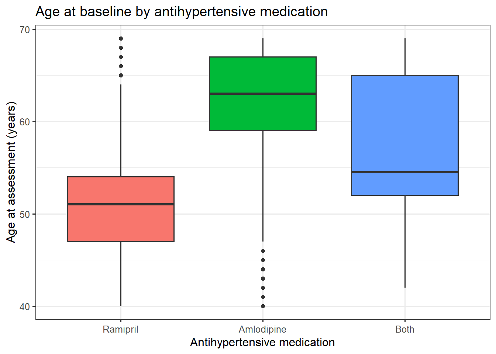

conda activate hpdm208z1 Introduction
In this workshop you will extract prescriptions that contain two common antihypertensive medications: amlodipine (a calcium channel blocker [CCB]) and ramipril (an ACE inhibitor [ACEi]). You will perform epidemiological analysis with the derived data, identifying patient characteristics associated with being prescribed one or the other.
This builds on skills from previous modules, and the workshops you have already undertaken. Refer to previous workshops for Linux and R code to complete this workshop.
We’ll use the same synthetic version of UK Biobank used is Part 1. The data is synthetic to protect participant anonymity, though it is designed to resemble real UK Biobank data.
2 Setup
2.1 OpenStack
Log in to your OpenStack instance as usual. Activate the conda environment by typing the below into your Linux terminal.
We will use some linux command line tools you have met before for file manipulation, and then R for statistical analysis.
We’ll use functions from the {tidyverse} suite of packages designed for data science. All packages share an underlying design philosophy, grammar, and data structures, providing a comprehensive set of tools for data manipulation, analysis, and visualisation.
If not already installed in your conda environment, type the below into your Linux terminal.
conda install -c r r-tidyverse -yYou can complete this workshop directly in the linux terminal, or create a JupyterLab notebook if you prefer. If the former make sure to save your commands in a text file.
2.2 Working directory
All data for this workshop are on your OpenStack instance at the below location. Code examples assume this is your working directory:
~/hpdm208z/workshops/medications_data/3 UK Biobank GP prescribing data
This synthetic version of primary care (GP) prescribing data linked to UK Biobank can be viewed as below:
zcat ukb_gp_scripts.tsv.gz | head -n15eid date bnf
x100001 2011-02-09 0206020A0AAATAT
x100001 2011-03-04 0206020A0AAATAT
x100001 2011-10-04 0212000B0AAASAS
x100001 2012-04-02 21300000962
x100001 2013-01-15 0212000B0BBACAC
x100001 2013-02-01 0206020A0AAAJAJ
x100001 2013-04-01 0212000B0AAAAAA
x100001 2013-08-20 0206020A0AAAUAU
x100001 2013-09-23 0206020A0AAATAT
x100001 2014-05-30 0212000B0BBAEAL
x100001 2014-12-12 0212000B0AAANAN
x100001 2016-03-17 0212000B0AAAQAQ
x100001 2016-07-29 0212000B0AAAFAF
x100001 2017-03-14 0206020A0AAABABIt is a tab-separated file, where each row is a prescribing event. Each person can have multiple rows, like with the clinical events data. In this synthetic dataset all prescriptions are coded with British National Formulary (bnf) codes. Real data may include other code types, such as SNOMED CT.
4 Identify BNF clinical codes for amlodipine and ramipril
Identify the BNF Chemical Substance code for each medication.
When considering atorvastatin previously we knew that the products only contained the single chemical substance. Products for conditions such as hypertension can include multiple chemical substances in the same tablet.
Search for amlodipine in the BNF file and inspect the matched rows. Amlodipine (a calcium channel blocker [CCB]) can be prescribed alongside Olmesartan medoxomil (an angiotension receptor blocker [ARB]), so we need to identify the Chemical Substance code that refers to procuts containing amlodipine only.
# get rows with amlodipine (note the -i 'ignore case' flag)
# keep all columns to inspect file output
zcat bnf_code_historic_2024_version_86.tsv.gz | grep -i "amlodipine" > bnf_amlodipine.tsv
cut -f10-13 bnf_amlodipine.tsv0205051AC Perindopril erbumine with amlodipine 0205051ACAA Perindopril erbumine 4mg / Amlodipine 5mg tablets
0205051AC Perindopril erbumine with amlodipine 0205051ACAA Perindopril erbumine 4mg / Amlodipine 10mg tablets
0205051AC Perindopril erbumine with amlodipine 0205051ACAA Perindopril erbumine 8mg / Amlodipine 10mg tablets
0205051AC Perindopril erbumine with amlodipine 0205051ACAA Perindopril erbumine 8mg / Amlodipine 5mg tablets
0205052AB Olmesartan medoxomil/amlodipine 0205052ABAA Olmesartan medoxomil 20mg / Amlodipine 5mg tablets
0205052AB Olmesartan medoxomil/amlodipine 0205052ABAA Olmesartan medoxomil 40mg / Amlodipine 5mg tablets
0205052AB Olmesartan medoxomil/amlodipine 0205052ABAA Olmesartan medoxomil 40mg / Amlodipine 10mg tablets
0205052AB Sevikar 0205052ABBB Sevikar 20mg/5mg tablets
0205052AB Sevikar 0205052ABBB Sevikar 40mg/5mg tablets
0205052AB Sevikar 0205052ABBB Sevikar 40mg/10mg tablets
0205052AC Olmesartan medoxomil/amlodipine/hydrochlorothiazide 0205052ACAA Generic Sevikar HCT 20mg/5mg/12.5mg tablets
0205052AC Olmesartan medoxomil/amlodipine/hydrochlorothiazide 0205052ACAA Generic Sevikar HCT 40mg/5mg/12.5mg tablets
0205052AC Olmesartan medoxomil/amlodipine/hydrochlorothiazide 0205052ACAA Generic Sevikar HCT 40mg/10mg/12.5mg tablets
0205052AC Olmesartan medoxomil/amlodipine/hydrochlorothiazide 0205052ACAA Generic Sevikar HCT 40mg/5mg/25mg tablets
0205052AC Olmesartan medoxomil/amlodipine/hydrochlorothiazide 0205052ACAA Generic Sevikar HCT 40mg/10mg/25mg tablets
0205052AC Sevikar HCT 0205052ACBB Sevikar HCT 20mg/5mg/12.5mg tablets
0205052AC Sevikar HCT 0205052ACBB Sevikar HCT 40mg/5mg/12.5mg tablets
0205052AC Sevikar HCT 0205052ACBB Sevikar HCT 40mg/10mg/12.5mg tablets
0205052AC Sevikar HCT 0205052ACBB Sevikar HCT 40mg/5mg/25mg tablets
0205052AC Sevikar HCT 0205052ACBB Sevikar HCT 40mg/10mg/25mg tablets
0206020A0 Amlodipine 0206020A0AA Amlodipine 5mg tablets
0206020A0 Amlodipine 0206020A0AA Amlodipine 10mg tablets
0206020A0 Amlodipine 0206020A0AA Amlodipine 5mg/5ml oral liquid
0206020A0 Amlodipine 0206020A0AA Amlodipine 10mg/5ml oral liquid
0206020A0 Amlodipine 0206020A0AA Amlodipine 50mg/5ml oral liquid
0206020A0 Amlodipine 0206020A0AA Amlodipine 4mg/5ml oral liquid
0206020A0 Amlodipine 0206020A0AA Amlodipine 2.5mg/5ml oral suspension
0206020A0 Amlodipine 0206020A0AA Amlodipine 5mg/5ml oral solution sugar free
0206020A0 Amlodipine 0206020A0AA Amlodipine 1.5mg/5ml oral liquid
0206020A0 Amlodipine 0206020A0AA Amlodipine 2mg/5ml oral liquid
0206020A0 Amlodipine 0206020A0AA Amlodipine 10mg/5ml oral solution sugar free
0206020A0 Amlodipine 0206020A0AA Amlodipine 5mg/5ml oral suspension sugar free
0206020A0 Amlodipine 0206020A0AA Amlodipine 2.5mg tablets
0206020A0 Istin 0206020A0BB Istin 5mg tablets
0206020A0 Istin 0206020A0BB Istin 10mg tablets
0206020A0 Amlostin 0206020A0BF Amlostin 5mg tablets
0206020A0 Amlostin 0206020A0BF Amlostin 10mg tablets
0206020Z0 Valsartan/amlodipine 0206020Z0AA Amlodipine 5mg / Valsartan 80mg tablets
0206020Z0 Valsartan/amlodipine 0206020Z0AA Amlodipine 5mg / Valsartan 160mg tablets
0206020Z0 Valsartan/amlodipine 0206020Z0AA Amlodipine 10mg / Valsartan 160mg tablets
0206020Z0 Exforge 0206020Z0BB Exforge 5mg/80mg tablets
0206020Z0 Exforge 0206020Z0BB Exforge 5mg/160mg tablets
0206020Z0 Exforge 0206020Z0BB Exforge 10mg/160mg tabletsLooks like it is just one code that is specific for products containing only amlodipine. Save that to a file to use when extracting the GP prescriptions. (Note you can also see brand names for amlodipine here such as “Istin” but it is the same chemical substance).
echo "0206020A0" > bnf_amlodipine.tsvNow repeat and find the BNF rows that include ramipril. Inspect the file and find the Chemical Substance code that refers to products containing only ramipril.
# get rows with ramipril (note the -i 'ignore case' flag)
# keep all columns to inspect file output
zcat bnf_code_historic_2024_version_86.tsv.gz | grep -i "ramipril" > bnf_ramipril.tsv
cut -f10-13 bnf_ramipril.tsv0205051R0 Ramipril 0205051R0AA Ramipril 1.25mg capsules
0205051R0 Ramipril 0205051R0AA Ramipril 2.5mg capsules
0205051R0 Ramipril 0205051R0AA Ramipril 5mg capsules
0205051R0 Ramipril 0205051R0AA Ramipril 10mg capsules
0205051R0 Ramipril 0205051R0AA Ramipril 5mg/5ml oral liquid
0205051R0 Ramipril 0205051R0AA Ramipril 2.5mg/5ml oral liquid
0205051R0 Ramipril 0205051R0AA Ramipril 1.25mg/5ml oral liquid
0205051R0 Ramipril 0205051R0AA Ramipril 10mg/5ml oral solution
0205051R0 Ramipril 0205051R0AA Generic Tritace titration pack capsules
0205051R0 Ramipril 0205051R0AA Ramipril 750micrograms/5ml oral liquid
0205051R0 Ramipril 0205051R0AA Ramipril 1.25mg tablets
0205051R0 Ramipril 0205051R0AA Ramipril 2.5mg tablets
0205051R0 Ramipril 0205051R0AA Ramipril 5mg tablets
0205051R0 Ramipril 0205051R0AA Ramipril 10mg tablets
0205051R0 Ramipril 0205051R0AA Ramipril 2.5mg/5ml oral solution sugar free
0205051R0 Ramipril 0205051R0AA Generic Tritace titration pack tablets
0205051R0 Ramipril 0205051R0AA Ramipril 2.5mg/5ml oral solution
0205051R0 Ramipril 0205051R0AA Ramipril 10mg/5ml oral suspension
0205051R0 Ramipril 0205051R0AA MDR BNF code - DO NOT USE
0205051R0 Ramipril 0205051R0AA MDR BNF code - DO NOT USE
0205051R0 Ramipril 0205051R0AA Ramipril 5mg/5ml oral solution sugar free
0205051R0 Ramipril 0205051R0AA Ramipril 10mg/5ml oral solution sugar free
0205051R0 Tritace 0205051R0BB Tritace 1.25mg capsules
0205051R0 Tritace 0205051R0BB Tritace 2.5mg capsules
0205051R0 Tritace 0205051R0BB Tritace 5mg capsules
0205051R0 Tritace 0205051R0BB Tritace 10mg capsules
0205051R0 Tritace 0205051R0BB Tritace titration pack capsules
0205051R0 Tritace 0205051R0BB Tritace 1.25mg tablets
0205051R0 Tritace 0205051R0BB Tritace 2.5mg tablets
0205051R0 Tritace 0205051R0BB Tritace 5mg tablets
0205051R0 Tritace 0205051R0BB Tritace 10mg tablets
0205051R0 Tritace 0205051R0BB Tritace titration pack tablets
0205051R0 Lopace 0205051R0BC Lopace 2.5mg capsules
0205051R0 Lopace 0205051R0BC Lopace 5mg capsules
0205051R0 Lopace 0205051R0BC Lopace 10mg capsules
0205051S0 Felodipine/ramipril 0205051S0AA Felodipine 2.5mg modified-release / Ramipril 2.5mg tablets
0205051S0 Felodipine/ramipril 0205051S0AA Felodipine 5mg modified-release / Ramipril 5mg tablets
0205051S0 Triapin 0205051S0BB Triapin 2.5mg/2.5mg modified-release tablets
0205051S0 Triapin 0205051S0BB Triapin 5mg/5mg modified-release tabletsLooks like it is just one code that is specific for ramipril as well. Save that to a file to use when extracting the GP prescriptions.
echo "0205051R0" > bnf_ramipril.tsv5 Subset prescription records
Extract the rows in ukb_gp_scripts.tsv.gz that correspond to prescriptions containing the amlodipine or ramipril chemical substance only. Also include the file header, so that columns are labelled.
Use Linux command line tools (such as grep) to achieve this.
# first get the header row
zcat ukb_gp_scripts.tsv.gz | head -n 1 > ukb_gp_scripts.amlodipine.tsv
zcat ukb_gp_scripts.tsv.gz | head -n 1 > ukb_gp_scripts.ramipril.tsv
# next search the GP scripts file for codes contained in a reference file
# we can do this in several ways. We can use grep directly, or use tools such as `awk`
# for BNF we do not want exact matches: we want to match any rows with the prefix
zgrep --fixed-strings --file bnf_amlodipine.tsv ukb_gp_scripts.tsv.gz >> ukb_gp_scripts.amlodipine.tsv
zgrep --fixed-strings --file bnf_ramipril.tsv ukb_gp_scripts.tsv.gz >> ukb_gp_scripts.ramipril.tsvWe are now ready to use R to load the (synthetic) UK Biobank baseline data, extracted GP prescriptions, and undertake some epidemiological analysis.
6 Launch R and tidyverse
To launch R on the Linux command line just type R. The following commands in this workshop are designed to be run in R itself.
Load the {tidyverse} library.
library(tidyverse)7 Load UK Biobank data
7.1 Baseline assessment data
Load and inspect the data. Subset to those with GP records available.
ukb <- read_tsv("ukb_baseline.tsv.gz")head(ukb)# A tibble: 6 × 14
eid assessment_date age sex bmi current_smoker ldl hba1c systolic_bp chd_prevalent chd_incident
<chr> <date> <dbl> <dbl> <dbl> <dbl> <dbl> <dbl> <dbl> <dbl> <dbl>
1 x100001 2010-07-28 61 1 28.4 0 3.55 43.3 192. 0 1
2 x100002 2010-09-07 51 0 28.0 0 3.05 33.4 143. 0 0
3 x100003 2007-06-07 49 1 29.3 0 3.72 35.6 128. 0 0
4 x100004 2010-02-24 51 1 24.8 0 2.72 34.8 152. 0 0
5 x100005 2009-03-17 57 1 31.3 0 3.34 37.3 162. 0 0
6 x100006 2008-08-05 42 0 33.9 0 3.85 30.1 156. 0 0
t2d_prevalent t2d_incident in_gp
<dbl> <dbl> <dbl>
1 0 0 1
2 0 0 0
3 0 0 1
4 0 0 0
5 0 1 0
6 0 0 1ukb <- ukb |> filter(in_gp==1)
dim(ukb)[1] 225017 147.2 GP prescriptions of antihypertensives
Load and inspect the extracted GP prescriptions data. Check it looks “OK”.
We have kept the amlodipine and ramipril prescriptions separately as the moment, so that it is easy to create the “binary” variables later (such as amlodipine_prevalent).
Check your extracts have similar number of rows and structure to these.
7.2.1 Amlodipine
ukb_scripts_amlodipine <- read_tsv("ukb_gp_scripts.amlodipine.tsv")dim(ukb_scripts_amlodipine)[1] 171313 3head(ukb_scripts_amlodipine)# A tibble: 6 × 3
eid date bnf
<chr> <date> <chr>
1 x100001 2011-02-09 0206020A0AAATAT
2 x100001 2011-03-04 0206020A0AAATAT
3 x100001 2013-02-01 0206020A0AAAJAJ
4 x100001 2013-08-20 0206020A0AAAUAU
5 x100001 2013-09-23 0206020A0AAATAT
6 x100001 2017-03-14 0206020A0AAABABHow many unique participants are there?
length(unique(ukb_scripts_amlodipine$eid))[1] 27571Does the data look sensible?
summary(ukb_scripts_amlodipine$date) Min. 1st Qu. Median Mean 3rd Qu. Max.
"1997-10-20" "2004-12-18" "2009-07-07" "2009-01-20" "2013-02-21" "2019-03-13" 7.2.2 Ramipril
ukb_scripts_ramipril <- read_tsv("ukb_gp_scripts.ramipril.tsv")dim(ukb_scripts_ramipril)[1] 48291 3head(ukb_scripts_ramipril)# A tibble: 6 × 3
eid date bnf
<chr> <date> <chr>
1 x100060 2000-07-21 0205051R0BBAHAM
2 x100060 2003-10-26 0205051R0BCAAAB
3 x100060 2005-03-15 0205051R0AAAHAH
4 x100060 2005-07-07 0205051R0BBACAC
5 x100060 2005-07-09 0205051R0AAAIAI
6 x100060 2006-12-06 0205051R0AAAWAWHow many unique participants are there?
length(unique(ukb_scripts_ramipril$eid))[1] 7571Does the data look sensible?
summary(ukb_scripts_ramipril$date) Min. 1st Qu. Median Mean 3rd Qu. Max.
"1997-11-01" "2004-05-22" "2008-07-15" "2008-07-07" "2012-09-05" "2019-03-05" 8 Investigate participants prescribed antihypertensives
For some types of analysis such as longitudinal analysis, it is useful to keep the data in this “long” format (where participants have multiple rows).
Today we just need to find the participants who have prescriptions before or after assessment, and investigate the participant characteristics associated with drug choice (CCB vs. ACEi).
8.1 Identify prevalent prescriptions
Next let’s work out which participants were prescribed amlodipine or ramipril before the baseline assessment (i.e., prevalent prescriptions), and which were prescribed after (incident prescriptions).
Join the assessment date with the prescription data.
ukb_scripts_amlodipine <- left_join(ukb_scripts_amlodipine, ukb[,c("eid","assessment_date")], by="eid")
ukb_scripts_ramipril <- left_join(ukb_scripts_ramipril, ukb[,c("eid","assessment_date")], by="eid")Create binary (0/1) variables indicating whether each prescription was before or after the UK Biobank assessment. Hint: use “if else” to assign [1] if a condition is met, otherwise assign [0] to the participants.
ukb_scripts_amlodipine <- ukb_scripts_amlodipine |> mutate(
amlodipine_prevalent = if_else(date <= assessment_date, 1, 0),
amlodipine_incident = if_else(date > assessment_date, 1, 0)
)
table(ukb_scripts_amlodipine$amlodipine_prevalent)
0 1
98455 72858 ukb_scripts_ramipril <- ukb_scripts_ramipril |> mutate(
ramipril_prevalent = if_else(date <= assessment_date, 1, 0),
ramipril_incident = if_else(date > assessment_date, 1, 0)
)
table(ukb_scripts_ramipril$ramipril_prevalent)
0 1
24459 23832 Now create corresponding binary variables in the main ukb data object, indicating whether a participant has a prevalent or incident prescription for each medication. Hint: use “if else” to assign [1] if a condition is met, otherwise assign [0] to the participants.
ukb <- ukb |> dplyr::mutate(
amlodipine_prevalent = if_else(eid %in% ukb_scripts_amlodipine$eid[ukb_scripts_amlodipine$amlodipine_prevalent==1], 1, 0),
amlodipine_incident = if_else(eid %in% ukb_scripts_amlodipine$eid[ukb_scripts_amlodipine$amlodipine_incident==1], 1, 0),
ramipril_prevalent = if_else(eid %in% ukb_scripts_ramipril$eid[ukb_scripts_ramipril$ramipril_prevalent==1], 1, 0),
ramipril_incident = if_else(eid %in% ukb_scripts_ramipril$eid[ukb_scripts_ramipril$ramipril_incident==1], 1, 0)
)You should have numbers similar to these (note that some people have both prevalent and incident prescriptions!):
table(ukb$amlodipine_prevalent)
0 1
211758 13259 table(ukb$amlodipine_incident)
0 1
204105 20912 table(ukb$ramipril_prevalent)
0 1
220697 4320 table(ukb$ramipril_incident)
0 1
219553 5464 8.2 Create a binary variable amlodipine_or_ramipril
This new variable will be useful for comparing predictors of drug choice.
Create a new categorical variable called amlodipine_or_ramipril. Set participants who were prescribed ramipril prior to baseline to 0 and amlodipine to 1. If a participants received both prior to baseline set them to 2. Other participants should be missing (i.e., set to NA). Hint: use “if else”.
ukb$amlodipine_or_ramipril <- if_else(ukb$ramipril_prevalent == 1 & ukb$amlodipine_prevalent == 0, 0, NA)
ukb$amlodipine_or_ramipril <- if_else(ukb$ramipril_prevalent == 0 & ukb$amlodipine_prevalent == 1, 1, ukb$amlodipine_or_ramipril)
ukb$amlodipine_or_ramipril <- if_else(ukb$ramipril_prevalent == 1 & ukb$amlodipine_prevalent == 1, 2, ukb$amlodipine_or_ramipril)You should get numbers similar to this:
table(ukb$amlodipine_or_ramipril)
0 1 2
4180 13119 140 8.3 Hypothesis 1: antihypertensives affect blood pressure
Antihypertensives are prescribed to reduce risk of cardiovascular disease and strokes by lowering blood pressure. Systolic (or “peak”) blood pressure is most commonly used clinically to define hypertension.
Test associations between each prevalent antihypertensive and systolic blood pressure separately using linear regression models. Adjust for age and sex.
# For example: the association between "previously prescribed amlodipine" and measured SBP
model1 <- glm(systolic_bp ~ age + sex + amlodipine_prevalent, data = ukb)
# extract the model estimates into a data frame
# add variables for the confidence intervals
result1 <- model1 |> summary() |> coef() |> as.data.frame()
result1$CI_lower <- result1$Estimate - (result1$`Std. Error` * 1.96)
result1$CI_upper <- result1$Estimate + (result1$`Std. Error` * 1.96)
result1[-1,] Estimate Std. Error t value Pr(>|t|) CI_lower CI_upper
age 0.9267722 0.004698405 197.25251 0 0.9175634 0.9359811
sex 7.1063388 0.075357013 94.30229 0 6.9586390 7.2540385
amlodipine_prevalent -17.4462667 0.161153820 -108.25847 0 -17.7621282 -17.1304052Remember that here, participants with amlodipine are compared to everyone else in the cohort.
Next, test whether SBP is significantly different between patients prescribed amlodipine vs. ramipril. Hint: treat the new variable as factor.
# For example: the association between "previously prescribed amlodipine" and measured SBP
model2 <- glm(systolic_bp ~ age + sex + as.factor(amlodipine_or_ramipril), data = ukb)
# extract the model estimates into a data frame
# add variables for the confidence intervals
result2 <- model2 |> summary() |> coef() |> as.data.frame()
result2$CI_lower <- result2$Estimate - (result2$`Std. Error` * 1.96)
result2$CI_upper <- result2$Estimate + (result2$`Std. Error` * 1.96)
result2[-1,] Estimate Std. Error t value Pr(>|t|) CI_lower CI_upper
age 1.042194 0.02083266 50.026925 0.000000e+00 1.001362 1.083026
sex 6.974515 0.23396987 29.809459 1.724041e-190 6.515934 7.433096
as.factor(amlodipine_or_ramipril)1 -2.598004 0.35444505 -7.329780 2.406193e-13 -3.292717 -1.903292
as.factor(amlodipine_or_ramipril)2 -7.913701 1.32344848 -5.979606 2.280413e-09 -10.507660 -5.319742Now we are comparing patients prescribed amlodipine (coded as 1) to those prescribed ramipril (coded as 0). In the same model we also compare those prescribed both (coded as 2) to ramipril.
8.4 Hypothesis 2: GP choice of CCB or ACEi depends on patient characteristics
We know from the NICE guidelines that GPs have a choice of medicines to prescribe to a patient following their diagnosis of hypertension.
8.4.1 Type-2 diabetes
Which medicine do you hypothesise is more common in patients with diagnosed type-2 diabetes? See variables t2d_prevalent and t2d_incident.
# cross-tabulate
table(ukb$t2d_prevalent, ukb$amlodipine_prevalent)
0 1
0 188412 12706
1 6752 553table(ukb$t2d_prevalent, ukb$ramipril_prevalent)
0 1
0 197580 3538
1 6523 782table(ukb$t2d_prevalent, ukb$amlodipine_or_ramipril)
0 1 2
0 3475 12643 63
1 705 476 77Test the hypothesis using logistic regression models.
# run logistic regression model - is ramipril prescription more likely than amlodipine
# if the patient has type-2 diabetes?
model3 <- glm(t2d_prevalent ~ age + sex + as.factor(amlodipine_or_ramipril), data = ukb, family = binomial)
# extract model estimates and calculate CIs
# convert estimates to Odds Ratios
result3 <- model3 |> summary() |> coef() |> as.data.frame()
result3$OR <- exp(result3[,"Estimate"])
result3$CI_lower <- exp(result3$Estimate - (result3$`Std. Error` * 1.96))
result3$CI_upper <- exp(result3$Estimate + (result3$`Std. Error` * 1.96))
result3[-1,] Estimate Std. Error z value Pr(>|z|) OR CI_lower CI_upper
age 0.2150432 0.006709649 32.049844 2.206377e-225 1.23991545 1.22371618 1.25632916
sex 0.6972277 0.070574899 9.879259 5.120998e-23 2.00817778 1.74874945 2.30609250
as.factor(amlodipine_or_ramipril)1 -3.8880603 0.098884506 -39.319207 0.000000e+00 0.02048504 0.01687581 0.02486618
as.factor(amlodipine_or_ramipril)2 1.1913618 0.225099411 5.292603 1.205876e-07 3.29156061 2.11735349 5.11694022Do the results fit your expectations? Remember that an Odds Ratio (OR) < 1 would indicate that the coded group (e.g., amlodipine 1) is less likely to have the outcome (in this case type-2 diabetes) compared to the reference group (i.e., ramipril 0).
8.4.2 Age
Which medicine do you hypothesise is more common in younger patients?
Summarize the age at baseline assessment in those with previous prescriptions of amlodipine and ramipril.
summary(ukb$age[ukb$amlodipine_prevalent==1]) Min. 1st Qu. Median Mean 3rd Qu. Max.
40.00 59.00 63.00 62.39 67.00 69.00 summary(ukb$age[ukb$ramipril_prevalent==1]) Min. 1st Qu. Median Mean 3rd Qu. Max.
40.00 47.00 51.00 51.75 54.00 69.00 Test the hypothesis that participants prescribed amlodipine are older at baseline assessment using a regression model. Hint: the model needs to treat amlodipine_or_ramipril as factor
# For example: the association between "previously prescribed amlodipine" and measured SBP
model4 <- glm(age ~ sex + as.factor(amlodipine_or_ramipril), data = ukb)
# extract the model estimates into a data frame
# add variables for the confidence intervals
result4 <- model4 |> summary() |> coef() |> as.data.frame()
result4$CI_lower <- result4$Estimate - (result4$`Std. Error` * 1.96)
result4$CI_upper <- result4$Estimate + (result4$`Std. Error` * 1.96)
result4 Estimate Std. Error t value Pr(>|t|) CI_lower CI_upper
(Intercept) 51.1727427 0.09448147 541.616714 0.000000e+00 50.9875590 51.3579264
sex 0.8309372 0.08482276 9.796159 1.337586e-22 0.6646846 0.9971898
as.factor(amlodipine_or_ramipril)1 10.8902424 0.09899871 110.003884 0.000000e+00 10.6962049 11.0842798
as.factor(amlodipine_or_ramipril)2 6.0059561 0.47896288 12.539502 6.484700e-36 5.0671888 6.9447233The estimate shows the average difference in age (in units of years) between the groups. It the difference statistically significant?
Use a boxplot to visualize the median age between the two groups.
ukb |>
# drop if missing key data
filter(!is.na(amlodipine_or_ramipril)) |>
# Provide "nice" labels
mutate(group = factor(amlodipine_or_ramipril,
levels = c(0, 1, 2),
labels = c("Ramipril", "Amlodipine", "Both"))
) |>
# Use ggplot to create the boxplot
ggplot(aes(x = group, y = age, fill = group)) +
geom_boxplot() +
labs(
title = "Age at baseline by antihypertensive medication",
x = "Antihypertensive medication",
y = "Age at assessment (years)"
) +
theme(legend.position = "none")
9 Summary
Congratulations, you’ve investigated an example of real-world stratified medicine, where patient treatment is tailored to their characteristics.